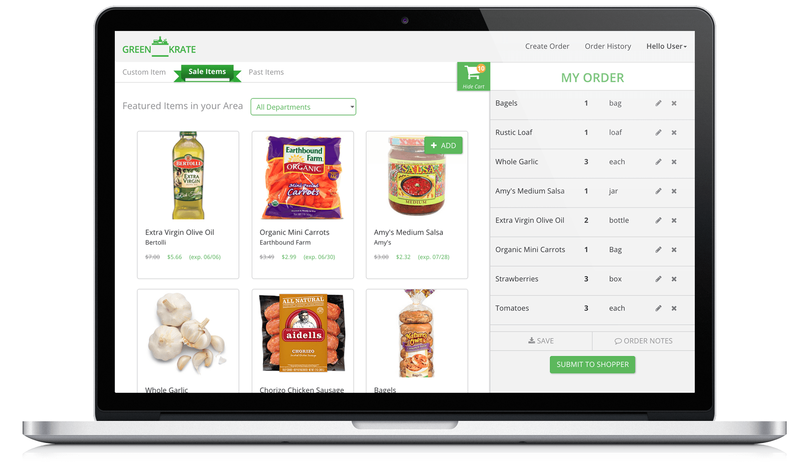

Iterative Delivery
We used an iterative approach to incrementally release features to beta users in the pilot program. Our initial sprint tackled the beta invite management via Mailchimp/Mandrill, payments integration with Braintree, and a basic grocery list management using Firebase. By leveraging these services, we were able to deliver a fully functional, revenue-generating core experience all in 2 weeks. Customers were able to submit grocery orders, which the GreenKrate shoppers were able to receive, fulfill and charge for.
Customer Focused Upgrades
We expanded on this experience in following sprints by adding additional features, such as email notifications, catalog item content, on-sale/featured items, and recently ordered items. By developing fully functional feature sets every two weeks we were able to regularly gather customer feedback, and prioritize feature requests appropriately. The client was able to launch the pilot successfully with a fast and convenient way for users to create their grocery orders, and for the business to efficiently fulfill them.